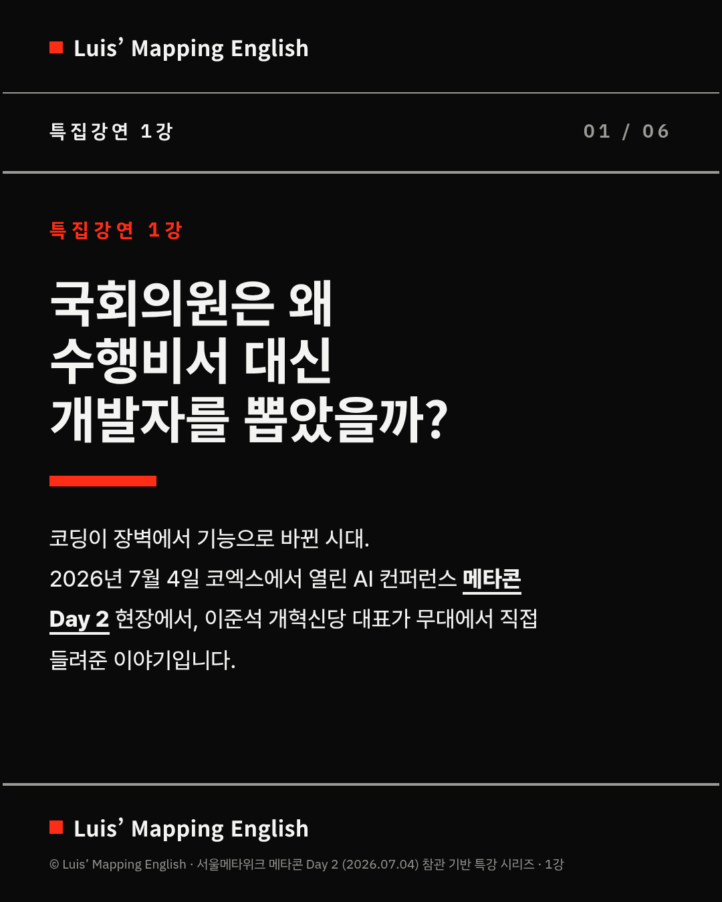
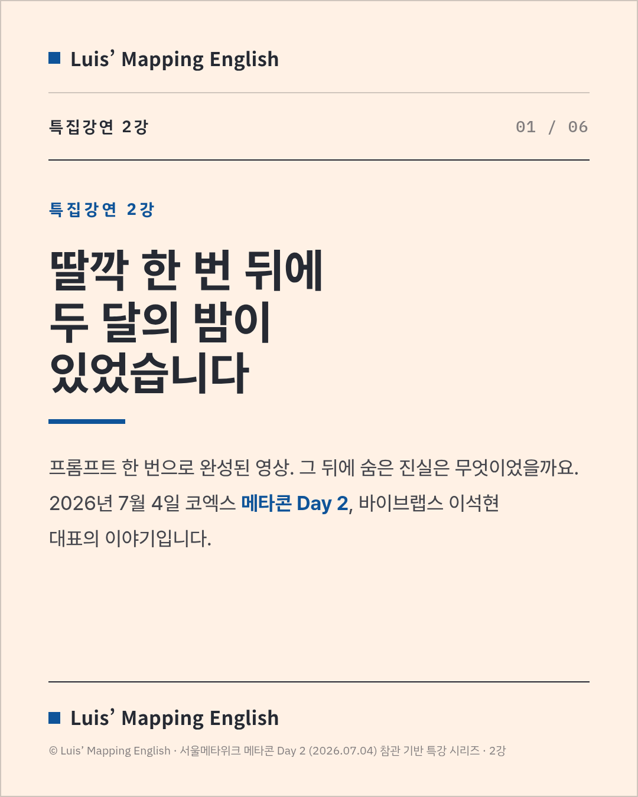
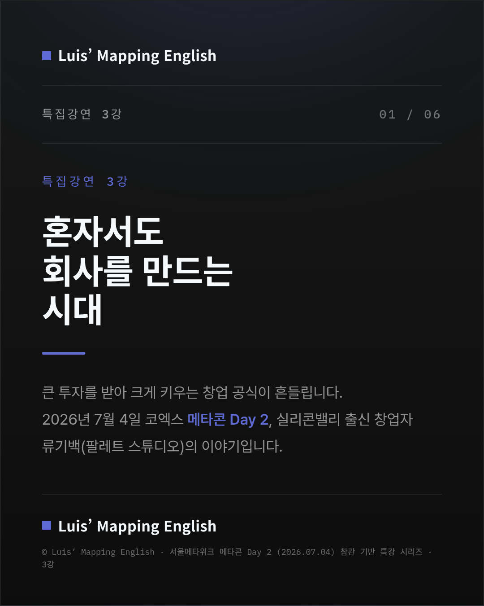
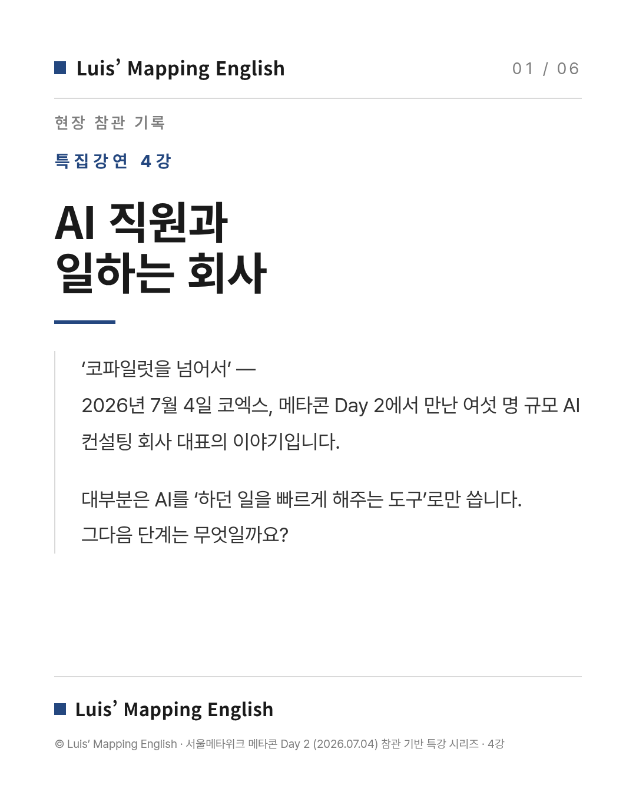
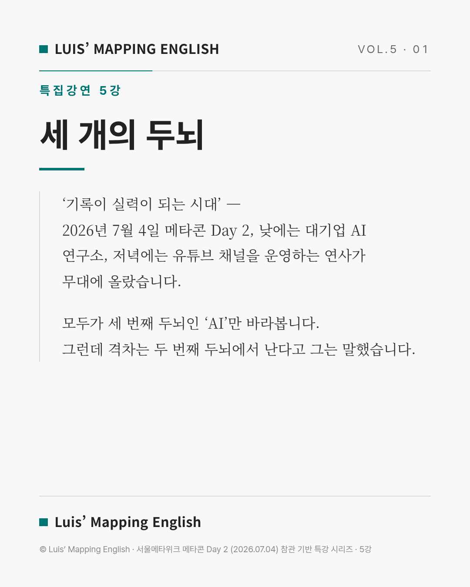
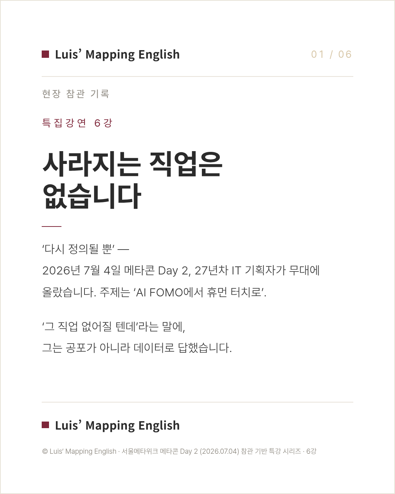
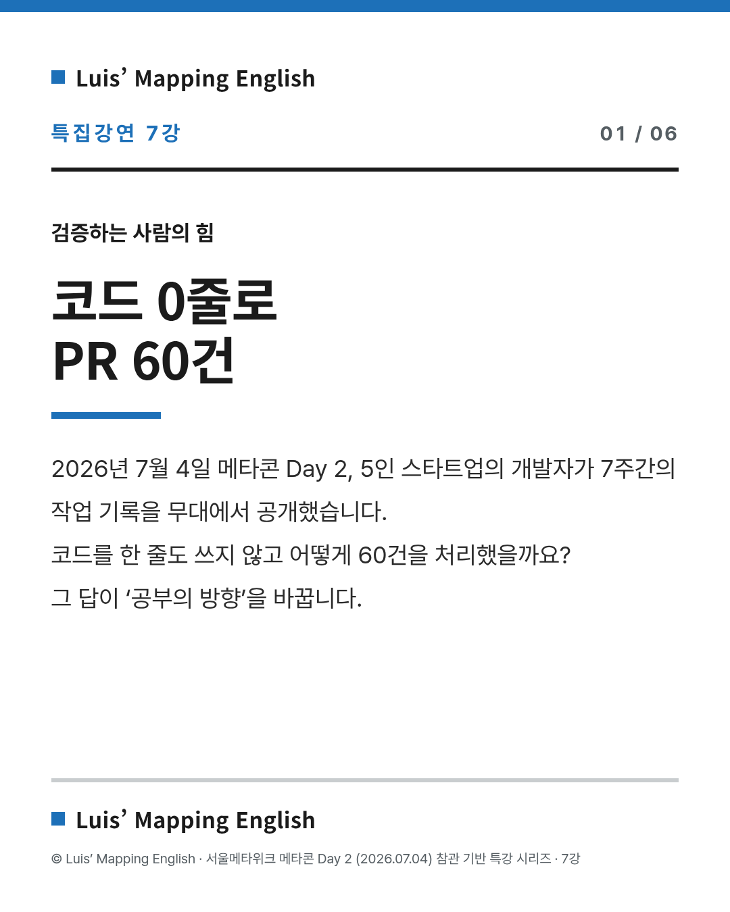
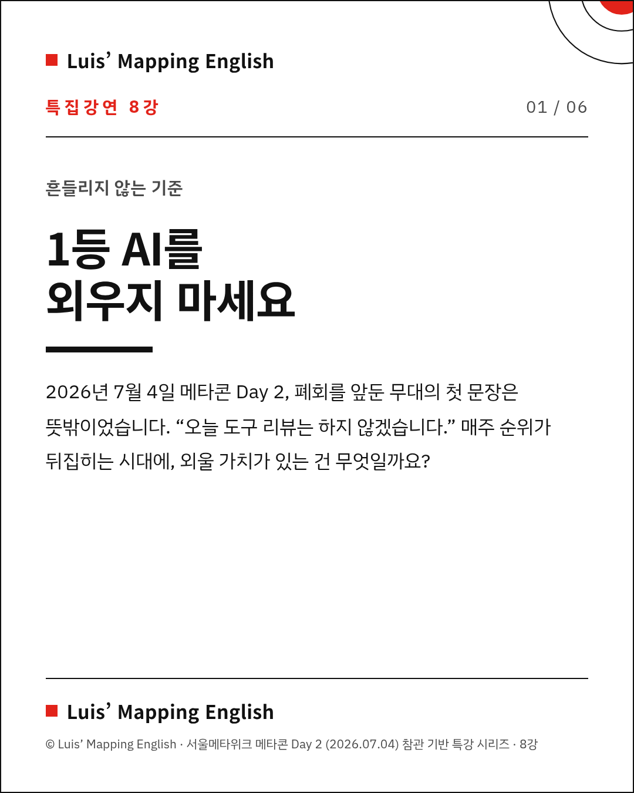
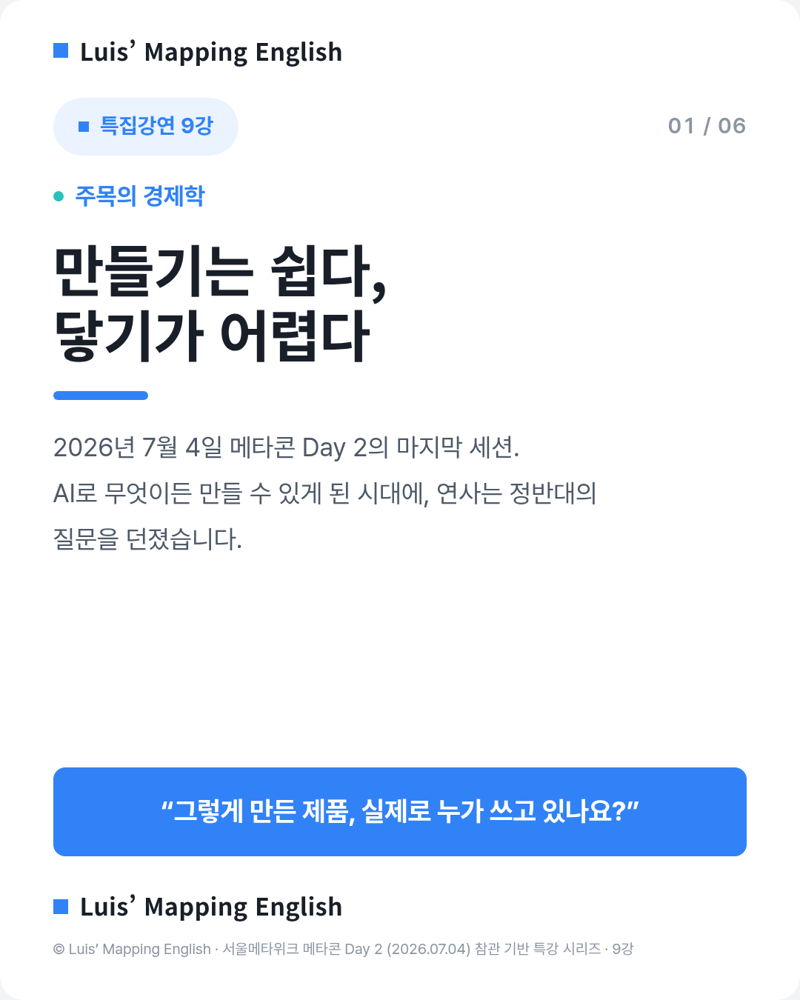

강별 카드뉴스 · 전체 9강

1강
국회의원은 왜 수행비서 대신 개발자를 뽑았나

2강
딸깍의 진실 — AI 시대의 실력은 ‘번역’

3강
혼자서도 회사를 만든다 — 창업 공식의 붕괴

4강
AI 직원과 일하는 회사 — 코파일럿을 넘어서

5강
기록이 실력이 되는 시대 — 세 개의 두뇌

6강
사라지는 직업은 없다, 다시 정의될 뿐

7강
코드 0줄로 PR 60건 — 검증하는 사람의 힘

8강
1등 AI를 외우지 마라 — 흔들리지 않는 기준

9강
만들기는 쉽다, 닿기가 어렵다 — 주목의 경제학
추가 자료
Luis' Mapping English
부산의 중·고등 영어 전문 학원입니다. 수능·내신 영어와 영어 글쓰기, 진로·진학 상담을 함께 합니다. 이 참관 기록은 학생들의 주제탐구와 진로 설계로 이어집니다.
수강 문의 · 상담 안내는 학원으로 연락해 주세요. (여기에 연락처·채널을 기입해 주세요.)
© Luis' Mapping English · 서울메타위크 메타콘 Day 2 (2026.07.04) 참관 기록
모든 인용은 현장 발언·검증 자료에 근거하며, 미검증 수치는 배제했습니다.
모든 인용은 현장 발언·검증 자료에 근거하며, 미검증 수치는 배제했습니다.